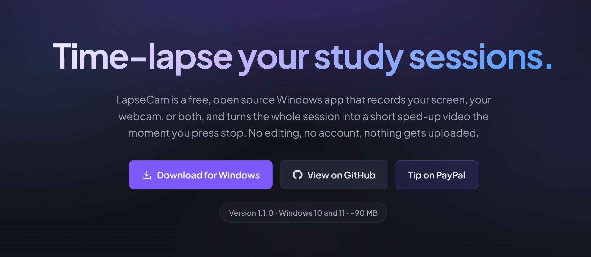
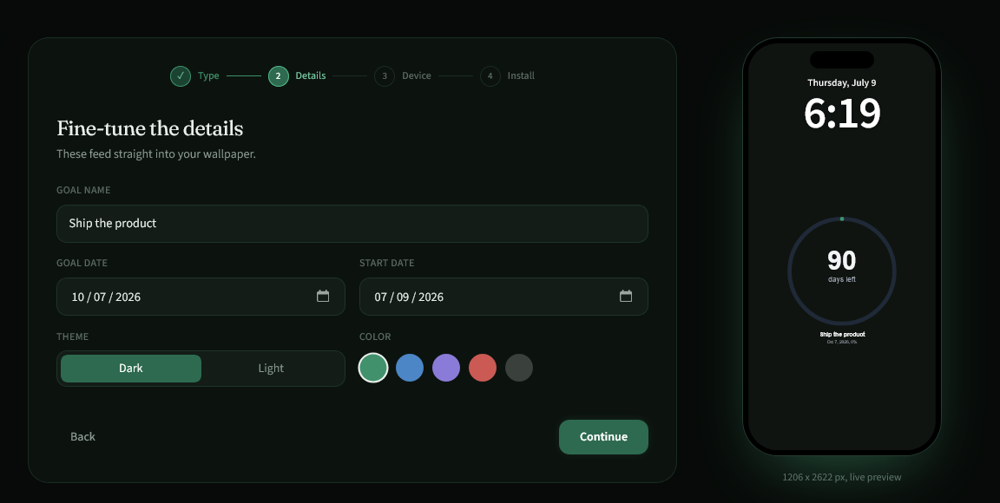
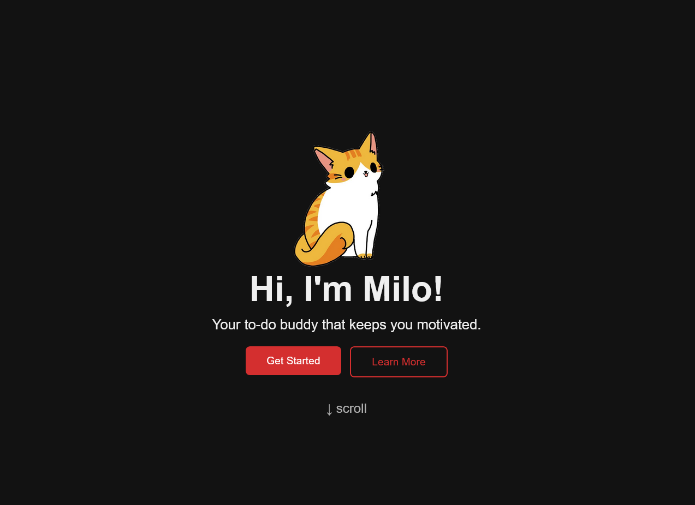
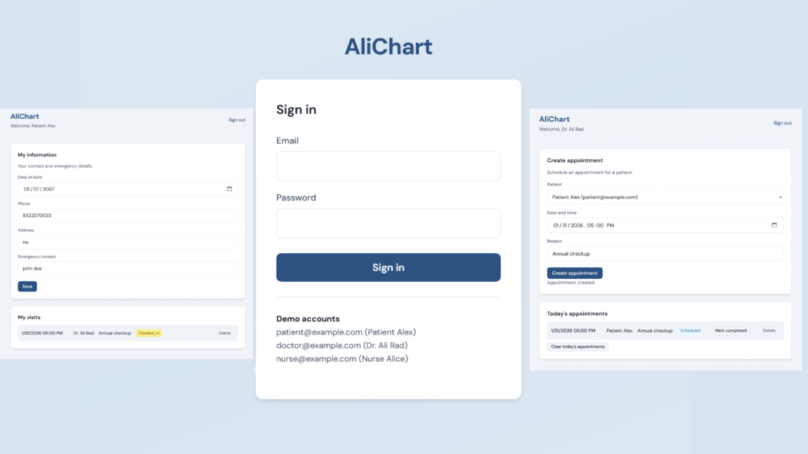
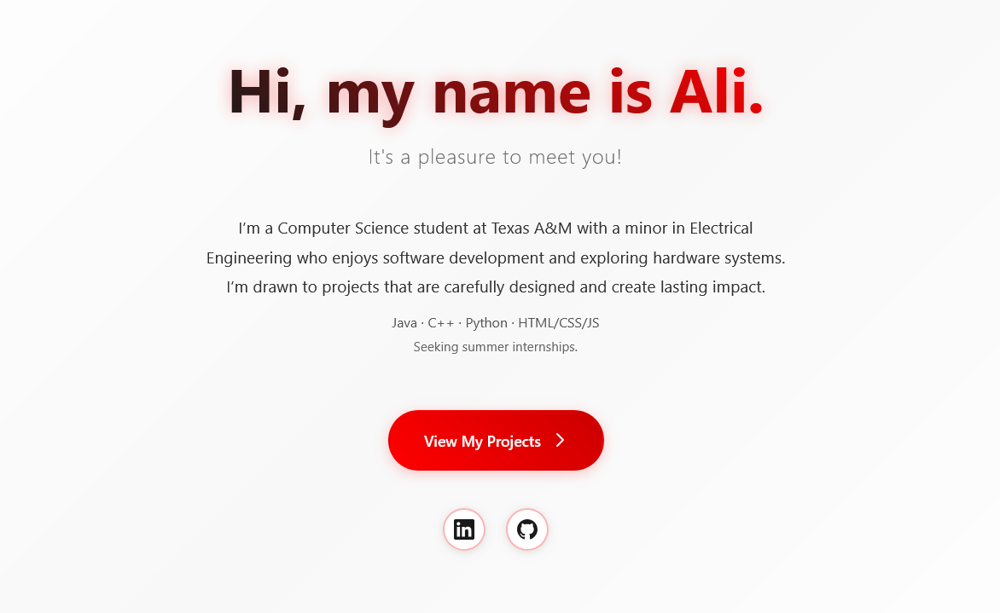
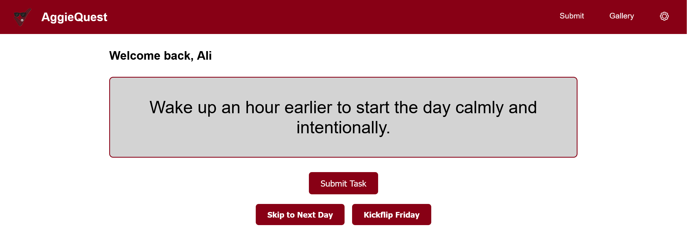
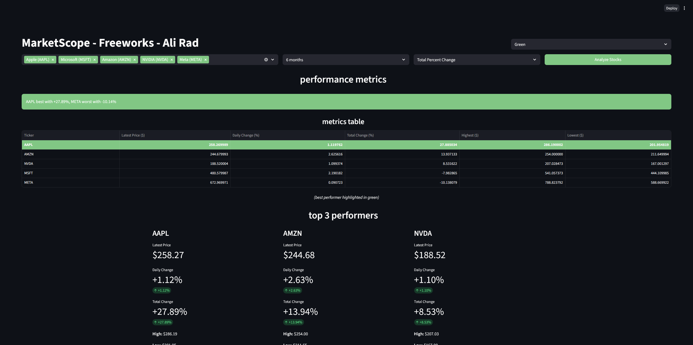
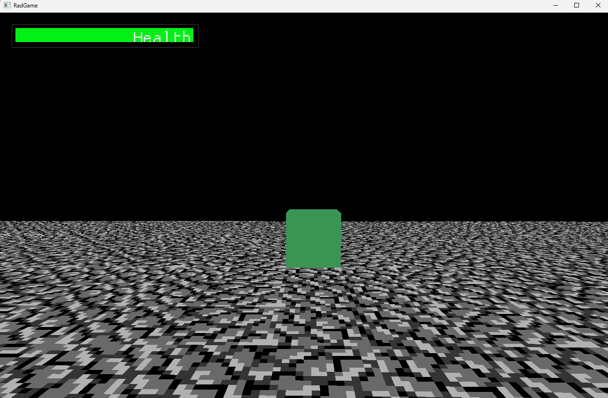

Welcome to my portfolio! Each project showcases different skills and technologies, and I'm always excited to explore new stacks and see what I can build. Explore my projects below and how I've brought them to life!
No projects match this filter.
A free Windows desktop app I built that turns study sessions into time-lapse videos with no editing required. Record your screen, webcam, or both, choose a speed preset up to 600x, and LapseCam captures frames on a canvas before FFmpeg assembles the final clip. Built with Electron and JavaScript, everything runs locally on your machine with no account or upload needed.

A web app I built that generates daily-updating phone lock screen wallpapers straight from a URL, including a year calendar, life-in-weeks grid, goal countdown, and progress tracker. Built with Next.js, TypeScript, and Tailwind CSS, it renders SVG layouts to PNG on the server with sharp. Point iPhone Shortcuts or Android MacroDroid at the link once and the wallpaper refreshes itself every day, with no account or database.

Milo is a goal and habit-tracking app I built to help users stay consistent with daily goals. It uses JavaScript and MySQL to store progress and streaks, and includes a small chatbot for journaling, reminders, and daily prompts to make the experience feel more motivating and interactive.

A live web application designed around a PostgreSQL relational database, previously deployed on AWS. Implements JavaScript-driven workflows to model data relationships, authentication logic, and CRUD-style operations within a healthcare-style system.

My personal website where I showcase my projects, experience, and what I'm currently working on. I built it from scratch using HTML, CSS, and JavaScript, focusing on clean visuals, smooth animations, and making the site feel simple and fun to explore.

A full-stack web app that generates daily challenges to encourage student engagement. I built a Flask backend with REST endpoints to handle challenge creation, submissions, and user progress, focusing on building a clean end-to-end flow from frontend interactions to backend logic.

An interactive stock analysis dashboard built with Python and Streamlit for comparing multiple stocks over different time periods. The app visualizes returns and price trends in an easy-to-explore way and placed 2nd in the FREEWORKS competition at Texas A&M.

A 3D game I built in Java to learn graphics programming and game engine basics. Using LWJGL and ImGui, I implemented real-time rendering, player movement, collision detection, and basic enemy AI while experimenting with low-level game systems.
